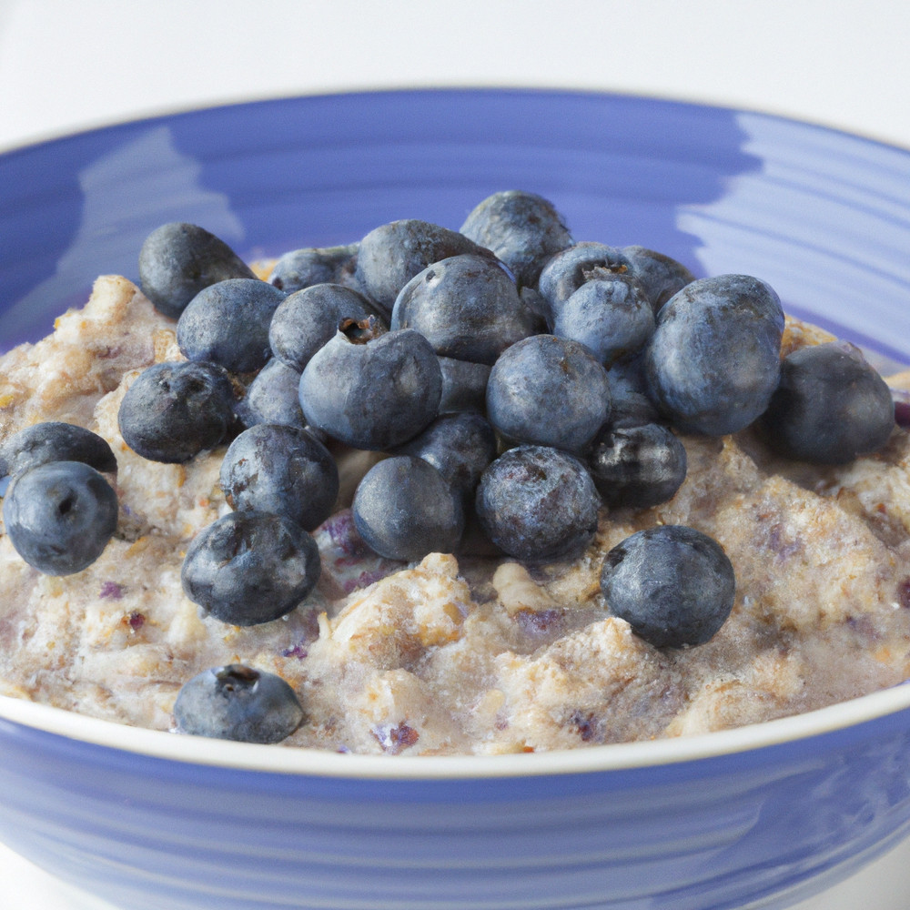

Blueberry porridge

Description
This microwaved version is easy and fast to make. Also very nutritiously packed with proteins. Ideal for breakfast.
Ingredients
- Milk
- Rolled oats
- Blueberries (or other preferred berries)
Steps
- Mix the milk with the rolled oats into a microwave safe bowl.
- Stir and then cook on high in the microwave for 2 and a half minutes.
- Remove from the microwave and stir.
- Place back into microwave and cook on high for thirty seconds.
- Repeat the previous two steps until the porridge has your desired consistency.
- Add blueberries and stir.